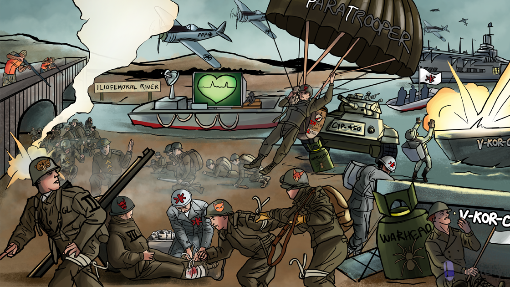

Vit K medic stops bleeding: vitamin K is a cofactor for the enzymatic activation of clotting factors
Vit K medic applies gamma-shaped bandage: vitamin K promotes gamma carboxylation of coagulation factors II, VII, IX, X
Throm-beaver with II shaped teeth: factor II (thrombin)
Seven deadly sins devil: factor VII
Nine lives cat: factor IX
FoX: factor X
GL: gamma carboxylation occurs at the glutamic acid residue on factors II, VII, IX, X
V-KOR supply boat: vitamin K epoxide reductase (VKOR) converts vitamin K epoxide (inactive) into vitamin K (active)
Corporal: vitamin K promotes gamma carboxylation of proteins C
Sergeant: vitamin K promotes gamma carboxylation of proteins S
Corporal and Sergeant hold their troops back: proteins C and S are anticoagulant factors
Warhead destroying V-KOR supply boat: warfarin inhibits vitamin K epoxide reductase (VKOR)
Incapacitated Vit K medic: inhibition of VKOR prevents activation of Vit K
Wounded VII soldier: factor VII is the first clotting factor to be reduced when starting warfarin
Delayed warhead detonation: warfarin’s onset of action is 8-12 hours
Open mouth: oral administration
Long tapering flag: long half-life
ParaTrooper: monitor warfarin activity with prothrombin time (PT)
Extrinsically parachuting in: PT is a measure of the function of the extrinsic coagulation pathway
Parachuting VII soldier: factor VII is the main component of the extrinsic coagulation pathway
INtercom Radio: the international normalized ratio (INR) is also used to measure warfarin activity
Goal INR 2-3 for prevention and treatment of thrombosis
Irregularly irregular signal: warfarin is used for long term anticoagulation in atrial fibrillation
Warship protecting the iliofemoral river: warfarin can be used for DVT prophylaxis
Teratogenic tarantula: warfarin can cause hemorrhage and abnormal bone formation in utero
Soldiers charging past the injured corporal: the anticoagulant protein C is reduced early in warfarin therapy, resulting in a hypercoagulable state
Black soot on corporal: warfarin induced skin necrosis due to early hypercoagulable state
Heparin hunters patrolling the bridge: coadministration of heparin when starting warfarin therapy prevents the early hypercoagulable state (heparin bridge)
Distant Vit K medic reinforcements: warfarin anticoagulation can be reversed with vitamin K (delayed effect)
FFP Fighter Pilot: fresh frozen plasma (FFP) provides coagulation factors for immediate reversal of warfarin anticoagulation
CYP-450 chrome tank crushing warhead: warfarin is a substrate of cytochrome P-450